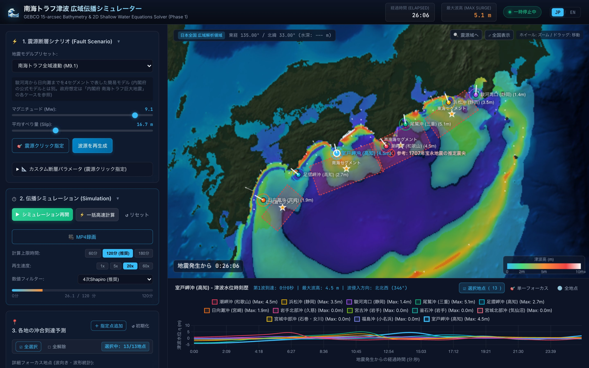
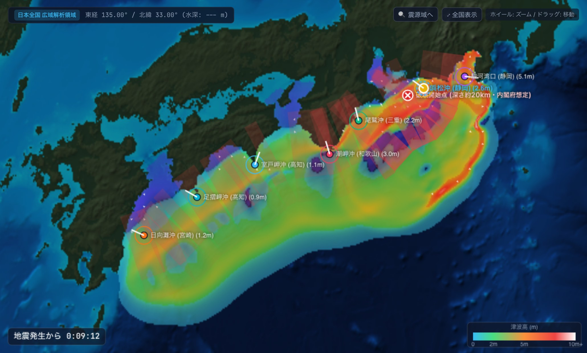

南海トラフから日本全国まで、
津波の広がりを計算する。
Okada弾性転位モデルと2次元長波方程式（浅水方程式）で、日本全国の海域の津波伝播を計算。沖合観測点の水位・流速を、市街地遡上シミュレーション（Phase 2）の境界条件としてそのまま出力します。

4つの主な機能
論文の式に基づく津波の計算、市街地シミュレーション向けのデータ出力、プレート境界に沿った震源の設定、動画保存ができます。
物理モデルに基づく計算
Okada (1985) の弾性転位モデルで、断層運動による海底の隆起・沈降を計算（文献の検算値と一致を確認）。Arakawa C格子上の2次元長波方程式を、緯度ごとの格子間隔補正と半陰解法のマニング摩擦で安定に解きます。
プレート境界に沿った震源の自動設定
千島・日本海溝、伊豆・小笠原、南海トラフ・琉球のプレート境界形状（USGS Slab1.0、0.1度格子。Slab2にも対応）を内蔵。「🎯 震源クリック指定」で地図をクリックすると、その地点のプレート境界の深さ・走向・傾斜に沿って、マグニチュードに応じた大きさの断層を自動で配置。手動での微調整もできます。
市街地遡上連携用 CSV 出力
全期間の時系列（方式A）に加え、第1波到達の2分前を t=0 として主要な波だけを切り出した「市街地連携用波形（方式B）」を出力。水位・東西/南北の流速（U, V）・流向に加え、各行に地震発生からの経過時間も記載します。
動画保存 (MP4) と数値安定化
計算結果を、選んだ長さ（10〜60秒）のMP4動画にワンクリックで書き出し（再生しながらの録画も可能）。4次Shapiroフィルターで格子規模の数値ノイズだけを取り除き、外周の吸収層で計算範囲の端からの反射を防ぎます。日本全国・120分の計算は約1分。
フェーズ1（広域海洋）からフェーズ2（市街地浸水）へ
沖合で計算した津波の水位・流速を、沿岸・市街地の浸水シミュレーションへ橋渡しします。
広域の津波伝播シミュレーション
震源断層（Okada） ➔ GEBCO海底地形（日本全国・1.5分メッシュ） ➔ 2次元長波方程式 ➔ 沖合観測点（室戸岬沖・潮岬沖・駿河湾口・宮城中部沖など既定13地点＋任意地点）の水位・流速・流向を時系列で記録。

市街地の津波遡上・浸水シミュレーション
本システムとは別の高解像度モデル。湾口・沖合の境界から本システムの波形を入力し、街路・防波堤・防潮堤・家屋への浸水深・流速を解析します。

※画像はイメージです
2つのエクスポート方式の使い分け
| 出力方式 | 開始時間 (t=0) | データの範囲 (120分の計算) | 主な用途 |
|---|---|---|---|
| 方式A 全期間データ | 地震発生の瞬間 (t = 0 s) | 約 2,400 行 (3秒刻み) | 地震直後からの引き波・初動を含む全過程の確認・比較。 |
| 方式B 市街地連携用波形 | 第1波到達の2分前を t = 0 とする | 主要波の通過まで（最大波の35分後または第1波到達の45分後の遅い方）。各行に地震発生からの経過時間つき | Phase 2 の市街地シミュレーションの境界条件。地震前の静かな時間を省き、計算時間を抑えられる。 |
内閣府想定・歴史地震・全国シナリオ
内閣府の南海トラフ巨大地震モデル（ケース①〜⑤の概略再現）、歴史地震、2011年東北地方太平洋沖地震を切り替えて比較できます。
南海トラフ全域連動 (M9.1)
Mw 9.1※本アプリ（v1.3.1。計算方法は v1.2.0 と同じ）で2時間計算した、沖合の観測点（水深数十〜数千m）の値です。海岸での津波高・遡上高は、浅い海で波が高くなるためこれより大きくなります。
波の広がりの簡易デモ
クリックした場所から波が広がる様子を、簡易な2次元波動方程式で表示するデモです。実際のアプリとは異なり、断層モデルや実際の海底地形は使っていません（上ほど浅い海として速度だけを変えています）。
製品版のご購入・入手方法
製品版アプリ（macOS DMG / Windows EXE。海底地形・プレート境界データを同梱）のご購入・ダウンロードは、公式ストア（cyber-matrix）で承っております。
macOS デスクトップ版
Tauri v2 製のデスクトップアプリ。計算はすべてPC内で行い、インターネット接続なしでも動作します。CSV・MP4動画は「ダウンロード」フォルダに保存。
Windows デスクトップ版
NSIS インストーラー形式。インターネット接続なしでも動作します。CSV・MP4動画は「ダウンロード」フォルダに保存。
Webブラウザ & 開発版
Node.js があれば、ローカルの開発サーバーで動かせます。
:5173cd nankai_trough
npm run dev
ドキュメント & マニュアル
詳細な操作マニュアル（日本語・英語）と、物理モデル解説書をご用意しています。
日本語版 操作マニュアル (HTML & Markdown)
画面構成、地震シナリオ、震源断層の設定、動画保存、Phase 2 向けCSV出力、注意事項、FAQ をまとめた日本語の利用ガイド。
English User Manual (HTML & Markdown)
Full English user guide: screen layout, scenarios, source fault setup, MP4 recording, CSV export for Phase 2, limitations, and FAQ.
物理モデル解説書 (Markdown・日本語)
Okada (1985) の式、内閣府モデルの再構成方法、球面座標の長波方程式、数値フィルター・吸収層の検証結果、2011年東北の再現性まで、実装に即して解説。